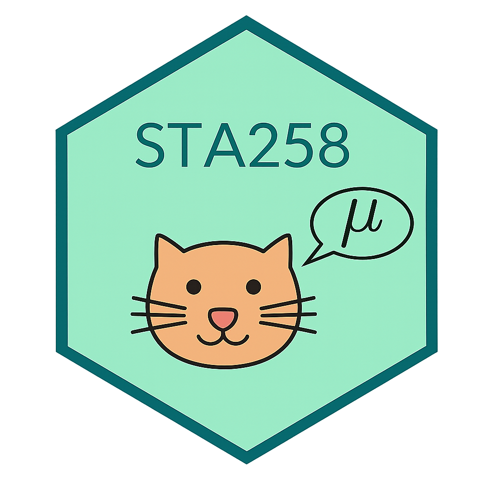
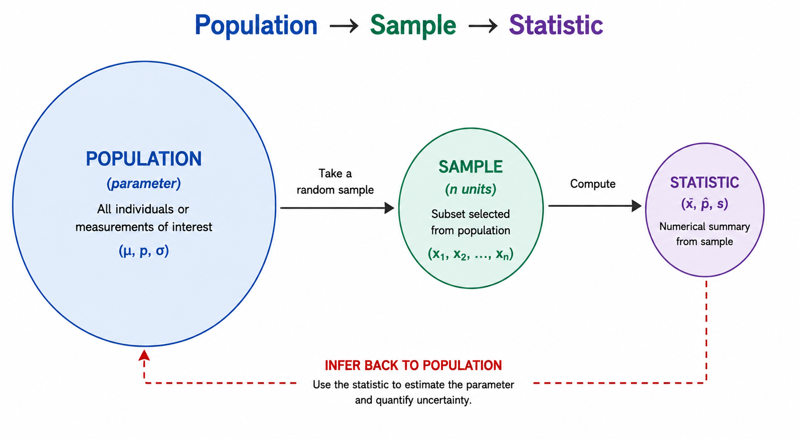

STA258: Statistics with Applied Probability
University of Toronto Mississauga

1.1 - Foundations Statistics, population, sample, unit, observation, variable, and the difference between descriptive and inferential ideas.
1.2 - Types of Data Quantitative vs qualitative data, plus discrete vs continuous and nominal vs ordinal categories.
1.3 - Inference Preview Sampling, bias, study types, and the first ideas behind drawing conclusions from data.
Core skill Thinking carefully about what data represent before you compute anything.
Core tool Vocabulary like population, sample, parameter, statistic, and variable.
Core habit Match every numerical claim with the correct data context.
How can we say something true about
millions of people we’ve never met?
Pollsters call ~1,000 Canadians and predict an election for 40 million.
Doctors test a drug on 500 patients and recommend it for everyone.
Netflix watches a sample of users and decides what shows to make.
That gap between “what we measured” and “what we want to know” - that’s what this whole course is about.
Definition 1.1 - Statistics
The science of collecting, classifying, summarizing, analyzing, and interpreting data.
Think of statistics as a pipeline:
Question → Data → Analysis → Decision
Definition 1.2 - Population
The entire group of individuals, items, or measurements that share a characteristic of interest and about which conclusions are to be drawn.
Examples:
A population can be real or hypothetical, finite or essentially infinite. What matters is that it’s the group you actually want to learn about.
Definition 1.3 - Sample
A subset selected from the population.
Examples:
Why sample? Measuring everyone is usually too slow, too expensive, or simply impossible.
Hover over any dot to see which unit it is. Grey = population, red = the sample.
A researcher wants to know the average sleep of all UTM students. She randomly surveys 200 UTM students and finds they sleep 6.8 hours on average.
What is the population? What is the sample?
Population: All UTM students.
Sample: The 200 surveyed UTM students.
Unit - the smallest entity from which data are collected (one row).
Observation - the full set of measured values for one unit.
Variable - a characteristic that varies from unit to unit (one column).
| Student | Age | Program | Study Hours | On Campus |
|---|---|---|---|---|
| 1 | 19 | Statistics | 20 | Yes |
| 2 | 22 | Computer Science | 15 | No |
| 3 | 20 | Biology | 28 | Yes |
| 4 | 21 | Psychology | 18 | No |
Run it. Then change a value or add another student.
Population unit
One member of the entire population.
One U of T student, when the population is all U of T students.
Sample unit
One member of the selected sample.
One of the 50 students you actually surveyed.
Every sample unit is also a population unit - but not the other way around.
Parameter
A number that describes the population.
Usually unknown.
Statistic
A number that describes the sample.
Calculated from data - known.
Memory trick: Parameter ↔︎ Population | Statistic ↔︎ Sample (both start with the same letter).
| Quantity | Population (parameter) | Sample (statistic) |
|---|---|---|
| Mean | \(\mu\) | \(\bar{x}\) |
| Standard deviation | \(\sigma\) | \(s\) |
| Proportion | \(p\) | \(\hat{p}\) |
| Size | \(N\) | \(n\) |
Common notation: Population quantities often use Greek letters, but population proportion and size are written as \(p\) and \(N\). Sample quantities include \(\bar{x}\), \(s\), \(\hat{p}\), and \(n\).
1 - parameter (all NBA players)
2 - statistic (500 surveyed)
3 - statistic (80 students)
4 - parameter (every student ever)
Below are weekly study hours for a sample of 10 students.
Calculate the sample mean.
A student wellness survey is sent to 500 randomly selected undergraduates on campus, out of a total enrolled population of roughly 15,000 students. The survey asks whether the student reports high levels of academic stress.
Descriptive statistics
Numerical and graphical methods used to summarize the data you have.
Inferential statistics
Using a sample to generalize to a larger population.
“The average mark in this lecture of 80 students is 72%.”
“63% of these 400 Torontonians support the plan.”
“We estimate the average STA258 mark across all sections is around 72%.”
“We estimate ~63% of all Toronto residents support the plan.”
Tell: descriptive describes this data. Inferential makes a claim beyond the data.
Question
A pollster surveys 1,200 Canadians and finds that 46% plan to vote for a certain party. The 46% is a:
Quantitative data
Numerical measurements where arithmetic is meaningful.
Qualitative (categorical) data
Values fall into categories; arithmetic doesn’t make sense.
Trap: a number doesn’t automatically mean quantitative.
Postal codes, jersey numbers, and student IDs look numeric but are categorical.
Discrete
Countable values, often whole numbers.
Continuous
Any value in a range; measured on a scale.
Nominal
Categories with no natural order.
Ordinal
Categories with a natural order.
Try classifying each one. Then click for the answer.
| Variable | Type |
|---|---|
| Number of pets a student owns | Quantitative, discrete |
| Language spoken at home | Qualitative, nominal |
| Backpack weight (kg) | Quantitative, continuous |
| Postal code | Qualitative, nominal |
| Classroom temperature (°C) | Quantitative, continuous |
| Self-rated health (Poor/Fair/Good) | Qualitative, ordinal |
Classify each variable as quantitative or qualitative. For each quantitative one, also say whether it is discrete or continuous. We will go through these together in class.
R can tell you what type each variable is. Run it, then change a value.
Question
A researcher records each participant’s number of siblings. What type of variable is this?

Two different samples of 100 UTM students will give two different sample means.
So any estimate must come with a measure of how much it might be off.
This is where the tools in later chapters come from:
Run it 5 times. Notice the sample mean changes each time - even though the true population mean is exactly 70.
How you collect your sample determines whether inference is honest.
Simple random sample (SRS) - every possible sample of the chosen size has an equal chance of being selected.
Systematic - every \(k\)-th unit from an ordered list (e.g., every 50th student).
Stratified - divide into groups, sample from each group.
Cluster - randomly pick whole groups, survey everyone inside.
Convenience / Voluntary response - whoever is easy to reach or chooses to respond. Usually biased.
Bias - a systematic tendency for a sample to differ from the population in a particular direction.
Classic bias traps:
For each scenario, identify the type of bias present and explain why it is a problem. We will discuss in class.
Observational
Record what’s already happening - no intervention.
Survey adults: do you take vitamins? Did you catch a cold?
Experimental
Randomly assign participants to treatments, then compare.
Randomly give half the volunteers Vitamin C, half a placebo, and compare cold rates.
Only well-designed experiments can establish cause and effect.
Classify each as an observational study, experimental study, or sample survey. Briefly justify your answer. We will take these up in class.
Below are some ages of UTM students in a sample. Compute:
Populations & Samples Population: the whole group of interest.
Sample: the part we actually study.
Parameter is an unknown population value; a statistic is its known sample estimate.
Types of Data Quantitative: numeric, either discrete or continuous.
Qualitative: categorical, either nominal or ordinal.
Inference & Sampling Estimate an unknown parameter from a sample statistic, with a measure of uncertainty.
Sampling method decides whether that inference is trustworthy.
One slide takeaway. Statistics is the science of learning from data under uncertainty - a known sample lets us make careful, measured statements about an unknown population.
Chapter 2 - An Introduction to R
We move into R - the tool we’ll use to compute statistics, simulate samples, and visualize uncertainty.
STA258 | Chapter 1